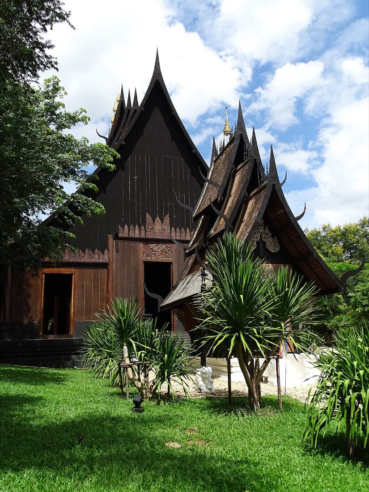

📷 Adam Jones from Kelowna, BC…พิพิธภัณฑ์-หอศิลป์ · Museums & Galleries (44)
— ผู้สนับสนุน · sponsor —Hongdam — บริษัทเว็บดีไซน์เชียงราย เว็บสองภาษา แอปไลน์ ระบบข้อมูลจริง · Hongdam — Chiang Rai web studio: bilingual platforms, LINE-native apps, real dataลงโฆษณาที่นี่ · advertise here
🐜 = ข้อมูลที่มีแล้ว เต็มที่ ๙ ตัว — ชื่อไทย ชื่ออังกฤษ เบอร์ LINE เวลาเปิด เว็บ รูป เจ้าของยืนยัน และมดเพิ่งไปเดิน · ข้อมูลคืออำนาจ เติมให้ครบได้ฟรี · 🐜 = one ant per fact we hold, nine when a listing is complete — Thai name, English name, phone, LINE, hours, a live website, a photo, owner-confirmed, recently walked. Information is power; filling it in is free.
- Celapot Gallery🐜3
- Chiang Mai Historical Centre🐜1
- Chiang Mai Historical Centre🐜1
- Chiang Mai House of Photography🐜1
- Collection of vintage railroad warning signs🐜1
- Dara Academy's Museum🐜1
- Elephant Poopoopaper Park🐜1
- Hmong Culture Museum🐜1
- Mai Space🐜1
- Maiiam🐜2
- Natural Science Museum🐜1
- New Regional Art Gallery Ltd.🐜1
- Northern Telecoms of Thailand Museum🐜1
- Rungkaew Museum🐜1
- Supthongkhum Sr Stidio 3🐜3
- Supthongkhum Sr-studio 1🐜3
- Surasak Gallery🐜1
- Suvannabhumi Art Gallery🐜2
- The Centennial Museum🐜1
- The Land Foundation🐜1
- Tribal village museum🐜1
- Wanlop Hansunthai Gallery🐜1
- Wattana Art Gallery🐜2
- คุ้มเจ้าบุรีรัตน์ · Khum Chao Burirat House🐜4
- บ้าน 100 อัน 1000 อย่าง · Ban Roi An Phan Yang🐜3
- บ้านคำอูน · Chateau Kum-Une Art Museum🐜2
- บ้านจ๊างนัก · Baan Jang Nak🐜3
- พิพิธภัณฑ์ ธนาคารแห่งประเทศไทย · Bank of Thailand Museum🐜3
- พิพิธภัณฑ์ วัดร้องเม็ง · Wat Rong Meng Museum🐜2
- พิพิธภัณฑ์ตราไปรษณียากร เชียงใหม่ · Chiang Mai Philatelic Museum🐜3
- พิพิธภัณฑ์พระตำหนักดาราภิรมย์ จุฬาลงกรณ์มหาวิทยาลัย · Dara Phirom Palace Museum🐜3
- พิพิธภัณฑ์พื้นถิ่นล้านนา · Lanna Folklife Museum🐜3
- พิพิธภัณฑ์วัดเกตการาม · Wat Ket karam museum🐜2
- พิพิธภัณฑ์หมู่บ้านชาวเขา · Hill Tribes Village Museum🐜2
- พิพิธภัณฑ์เรียนรู้ราษฎรบนพื้นที่สูง · Highland People Discovery Museum🐜3
- พิพิธภัณฑ์เรือนโบราณล้านนา มช. · Lanna Traditional House Museum CMU.🐜3
- พิพิธภัณฑ์แมลงโลกและสิ่งมหัศจรรย์ธรรมชาติ · Museum of World Insects and Natural Wonders🐜5
- พิพิธภัณฑ์แห่งชาติ จังหวัดเชียงใหม่ · Chiang Mai National Museum🐜5
- ศูนย์การเรียนรู้ภูมิปัญญาไทยไตลื้อ บ้านใบบุญ🐜3
- หอธรรม และพิพิธภัณฑ์วัดเจดีย์หลวง · Buddhist Manuscript Library and Museum🐜2
- หอนิทรรศการศิลปวัฒนธรรม มหาวิทยาลัยเชียงใหม่ · Art Center Chiang Mai University🐜2
- หอศิลปวัฒนธรรมเมืองเชียงใหม่ · Chiang Mai City Art & Cultural Center🐜5
- หอศิลป์เทา · Hall Zinthao🐜2
- อาร์ต อิน พาราไดซ์ เชียงใหม่ · Art in Paradise real location🐜4
⬇ GeoJSON (44 จุด · points)